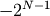
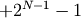

numpy.binary_repr¶
- numpy.binary_repr(num, width=None)¶
Return the binary representation of the input number as a string.
For negative numbers, if width is not given, a minus sign is added to the front. If width is given, the two’s complement of the number is returned, with respect to that width.
In a two’s-complement system negative numbers are represented by the two’s complement of the absolute value. This is the most common method of representing signed integers on computers [R16]. A N-bit two’s-complement system can represent every integer in the range  to .
Parameters : num : int
Only an integer decimal number can be used.
width : int, optional
The length of the returned string if num is positive, the length of the two’s complement if num is negative.
Returns : bin : str
Binary representation of num or two’s complement of num.
See also
- base_repr
- Return a string representation of a number in the given base system.
Notes
binary_repr is equivalent to using base_repr with base 2, but about 25x faster.
References
[R16] (1, 2) Wikipedia, “Two’s complement”, http://en.wikipedia.org/wiki/Two’s_complement Examples
>>> np.binary_repr(3) '11' >>> np.binary_repr(-3) '-11' >>> np.binary_repr(3, width=4) '0011'
The two’s complement is returned when the input number is negative and width is specified:
>>> np.binary_repr(-3, width=4) '1101'